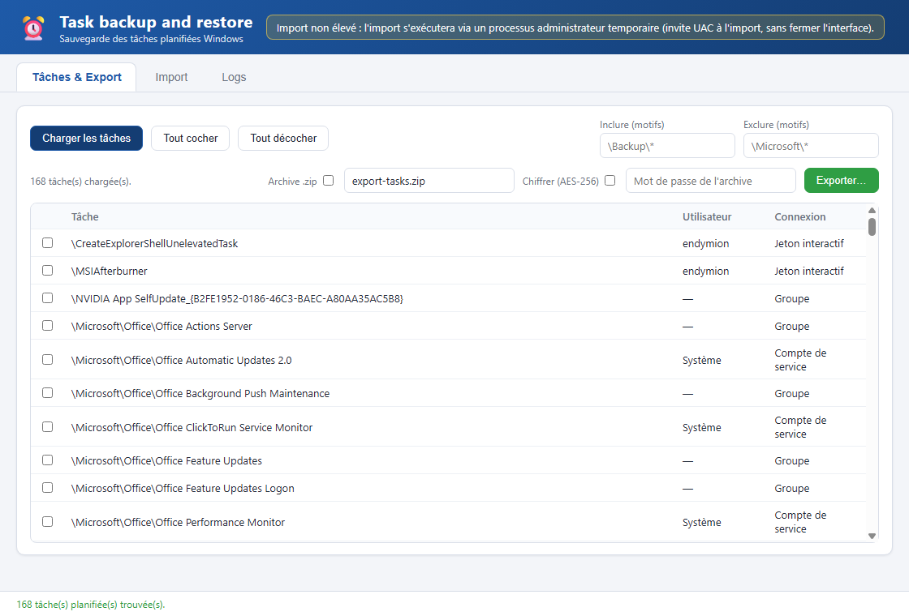
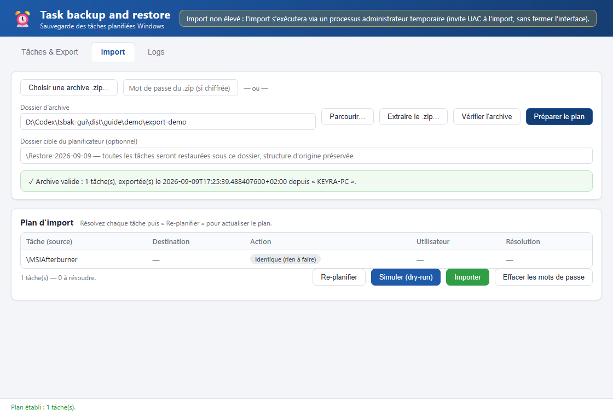
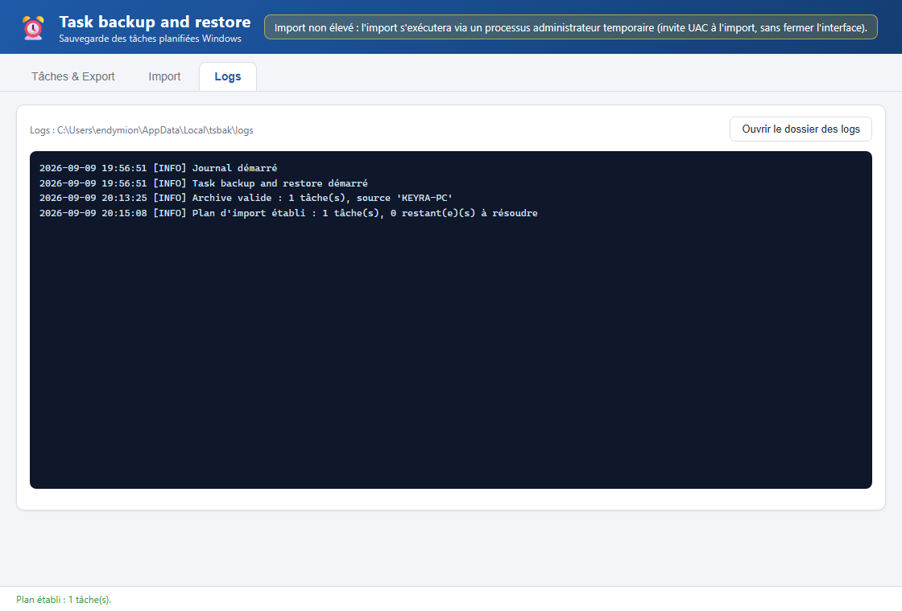
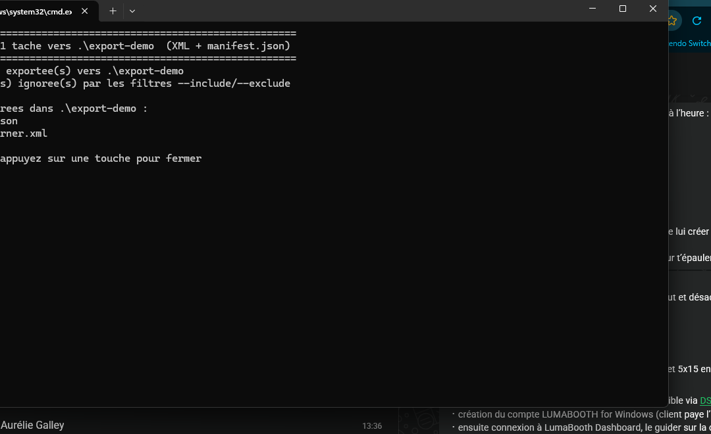
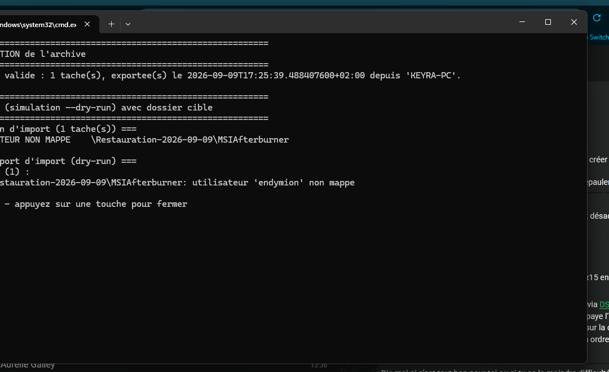
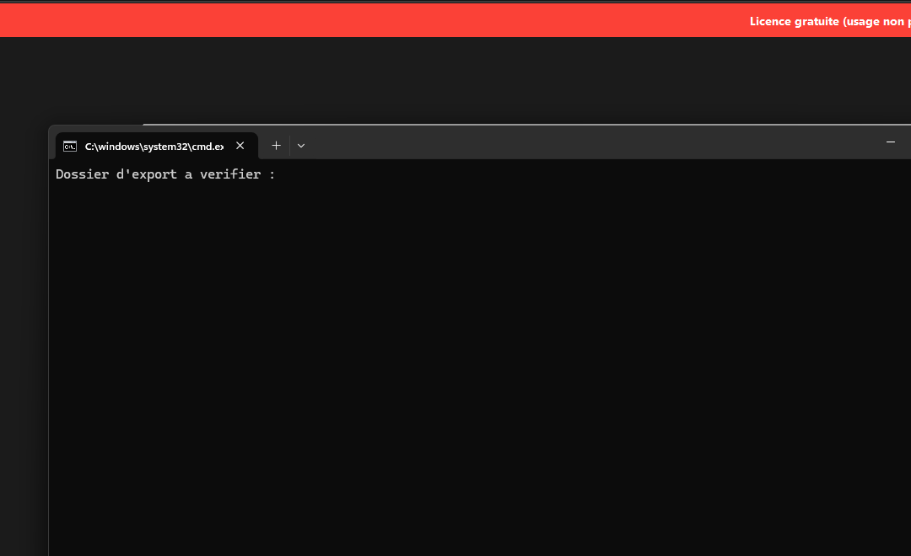
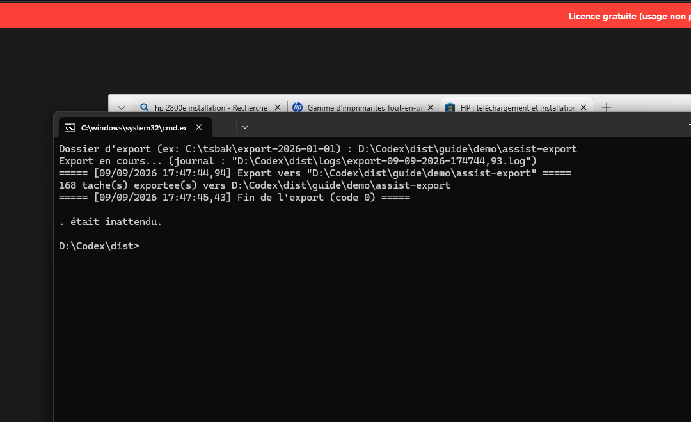
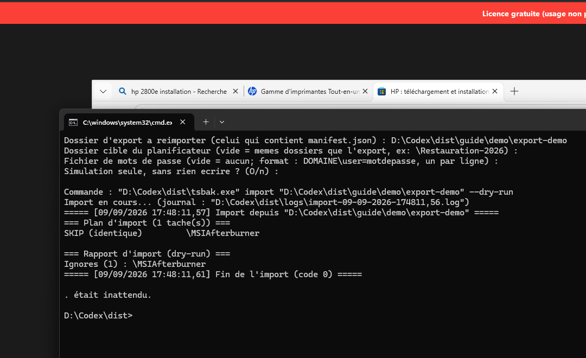

Export et import des tâches planifiées Windows, avec l'interface graphique et la ligne de commande
tsbak sauvegarde l'intégralité du Planificateur de tâches Windows : chaque tâche est exportée en XML brut, accompagnée d'un manifest.json qui contient les empreintes SHA-256 de chaque fichier. L'import vérifie l'intégrité de l'archive (manifeste + empreintes), établit un plan d'import tâche par tâche (création, mise à jour, conflit, ignorée, bloquée), puis l'applique — avec possibilité de simulation (dry-run) sans rien écrire.
Une archive d'export est un simple dossier (XML + manifest.json) ou un fichier .zip, éventuellement chiffré AES-256. Il suffit de la copier sur la machine cible.
Le cœur du programme (lecture/écriture du Planificateur via COM, validation, plan d'import) est partagé par deux interfaces :
| Outil | Fichier | Systèmes supportés | Utilisation |
|---|---|---|---|
| Interface graphique (Tauri) | TaskBackupRestore.exe |
Windows 10 / 11 et Server 2016 → 2025+ (WebView2 requis, préinstallé) | Exploration visuelle : cases à cocher, plan interactif, mots de passe en champ masqué, journal en temps réel |
| Ligne de commande | tsbak.exe |
Windows Server 2008 R2 → 2025+ (aucune dépendance runtime) | Scripts, planification, machines anciennes, import 100 % non interactif |
Les deux outils écrivent leurs journaux dans le même dossier : %LOCALAPPDATA%\tsbak\logs\ (rotation quotidienne, conservation 14 jours). Les mots de passe n'y figurent jamais.
*, ex. \Microsoft\* pour exclure tout un dossier..zip est créé (nom réglable) ;
1 2 3 4.zip : « Choisir une archive .zip… », puis mot de passe si l'archive est chiffrée — ou.zip saisi ici est détecté automatiquement : extraction et validation déclenchées sans étape manuelle.\Restauration-2026-09-09 : chaque tâche est restaurée sous ce dossier, sa structure d'origine étant préservée (\Dossier\Tâche → \Restauration-2026-09-09\Dossier\Tâche).
1 2 3 4 5L'onglet Logs affiche le journal du jour en temps réel. Chaque action (chargement, export, extraction ZIP, validation, plan, simulation, import) y est consignée avec horodatage. Le dossier des journaux est ouvrable d'un clic : %LOCALAPPDATA%\tsbak\logs\ — un fichier par jour (tsbak-AAAA-MM-JJ.log), rétention 14 jours. La ligne de commande écrit dans le même dossier.

1La ligne de commande couvre les mêmes opérations, y compris sur les serveurs sans interface (2008 R2 → 2025+). Ouvrir une console en administrateur (clic droit → Exécuter en tant qu'administrateur), puis :
:: exporte TOUTES les tâches vers un dossier
tsbak.exe export D:\sauvegardes\export-2026-09-09
:: exporte une seule tâche (motif exact), ou un sous-ensemble par motifs
tsbak.exe export D:\sauvegardes\export-2026-09-09 --include "\MSIAfterburner"
tsbak.exe export D:\sauvegardes\export-2026-09-09 --include "\Backup\*" --exclude "\Microsoft\*"
1:: 1. vérifier l'intégrité de l'archive (manifeste + empreintes + XML)
tsbak.exe validate D:\sauvegardes\export-2026-09-09
:: 2. simuler (dry-run) : rien n'est écrit, rapport complet
tsbak.exe import D:\sauvegardes\export-2026-09-09 --dry-run
:: 3. importer réellement
tsbak.exe import D:\sauvegardes\export-2026-09-09
1 2--user-map (section 7).
dist\ contient export.cmd, import.cmd et validate.cmd : double-clic (import.cmd en administrateur), questions guidées, journal conservé dans dist\logs\, simulation par défaut.
Sur les serveurs sans interface graphique (Server 2008 R2, 2012, 2012 R2 — ou par simple habitude), le dossier dist\ contient trois assistants prêts à l'emploi : export.cmd, validate.cmd et import.cmd. Écrits en cmd compatible 2008 R2 (ASCII + CRLF), ils posent des questions guidées, exécutent tsbak.exe et conservent un journal horodaté dans dist\logs\ (en plus du journal partagé %LOCALAPPDATA%\tsbak\logs\).
validate.cmd et export.cmd suffit. import.cmd doit être lancé en administrateur (clic droit → Exécuter en tant qu'administrateur) pour écrire dans le Planificateur — sans cela, l'import s'arrête sur une erreur d'accès.validate.cmdvalidate.cmd (dans dist\).manifest.json) et valider.
1export.cmdexport.cmd. (Clic droit → Exécuter en tant qu'administrateur si des tâches d'autres comptes doivent aussi être exportées.)D:\tsbak\export-2026-09-09.dist\logs\export-AAAA-MM-JJ-HHMMSS.log.
1 2import.cmdimport.cmd.manifest.json) ;\Restauration-2026) ;DOMAINE\user=motdepasse, un par ligne) ;
1 2--folder)Le dossier cible préfixe chaque tâche en préservant la structure d'origine — idéal pour une restauration « à côté » sans écraser l'existant, ou pour isoler une reprise sur un serveur.
:: chaque tâche sera créée sous \Restauration-2026-09-09\... (structure d'origine conservée)
tsbak.exe import D:\sauvegardes\export-2026-09-09 --folder "\Restauration-2026-09-09"
:: la simulation confirme : CREATE \Restauration-2026-09-09\MSIAfterburner:: mapper un utilisateur source vers un compte de la machine cible (répétable)
tsbak.exe import D:\sauvegardes\export-2026-09-09 --user-map "OLDPC\svc_backup:NEWPC\svc_backup"
:: fournir les mots de passe dans un fichier "utilisateur=mot_de_passe" (un par ligne)
tsbak.exe import D:\sauvegardes\export-2026-09-09 --user-map "svc_backup:svc_backup" --password-file mdp.txt
:: ignorer (sans bloquer) les tâches dont le mot de passe n'est pas fourni
tsbak.exe import D:\sauvegardes\export-2026-09-09 --skip-password-tasks:: réponses "oui" par défaut aux questions non bloquantes + fichier de réponses JSON
tsbak.exe import D:\sauvegardes\export-2026-09-09 --yes --answer-file reponses.jsonschtasks /create /sc weekly /tn "tsbak-import" /tr "D:\tsbak\import.cmd" /ru SYSTEM) pour restaurer périodiquement des sauvegardes sur un serveur de secours.
--folder pour tester une restauration sans toucher à la production, puis supprimer le dossier de test.| Symptôme | Cause / solution |
|---|---|
| L'interface ne démarre pas sur Server 2008 R2 / 2012 | WebView2 n'y est plus mis à jour → utiliser tsbak.exe (CLI) ou les .cmd du dossier dist\. |
| « Utilisateur non mappé » / tâche bloquée au plan | Le compte source n'existe pas tel quel sur la cible → --user-map "source:cible" (GUI : colonne Résolution du plan). |
| « Mot de passe requis » | Fournir le mot de passe (champ masqué dans l'interface, --password-file en CLI) ou --skip-password-tasks pour ignorer ces tâches. |
| Archive refusée à la validation | Manifeste, empreinte ou XML altéré / incomplet → réexporter proprement ; ne pas modifier les fichiers à la main. |
| Archive .zip chiffrée illisible | Vérifier le mot de passe ; le format AES-256 est standard (7-Zip/WinZip le lisent). |
| « Échec » à l'import réel | Lancer en administrateur (UAC) ; consulter %LOCALAPPDATA%\tsbak\logs\ pour le détail. |
| Conflit : la tâche existe déjà et diffère | Le plan classe la tâche en conflit → choisir « Mettre à jour » (remplacement) ou l'ignorer ; ou restaurer sous un --folder dédié. |